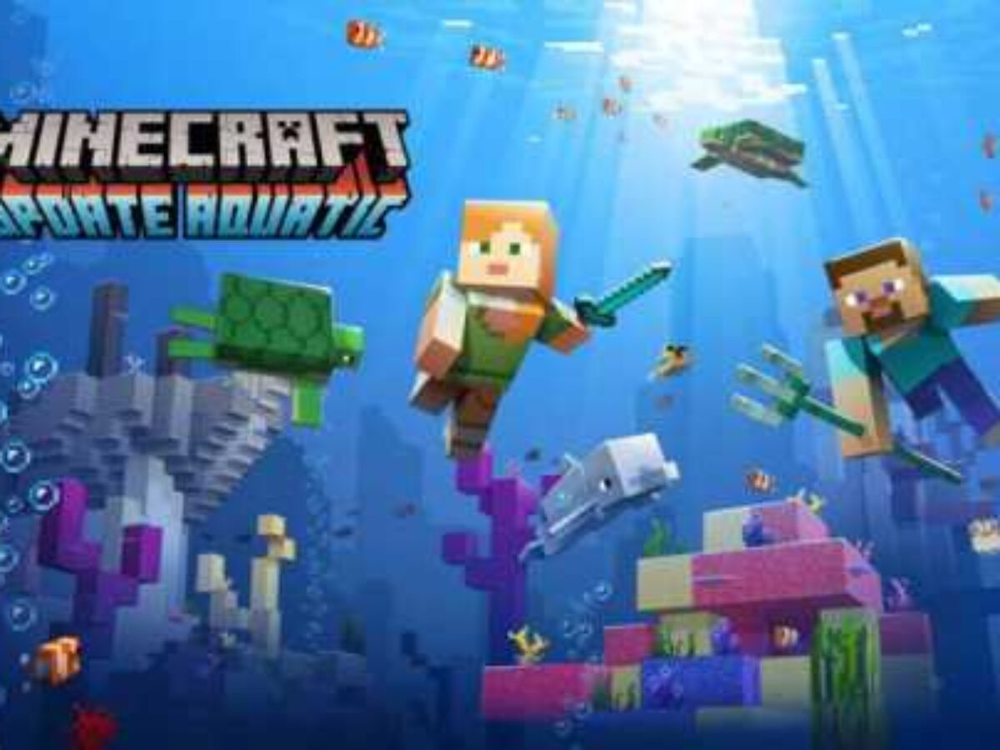
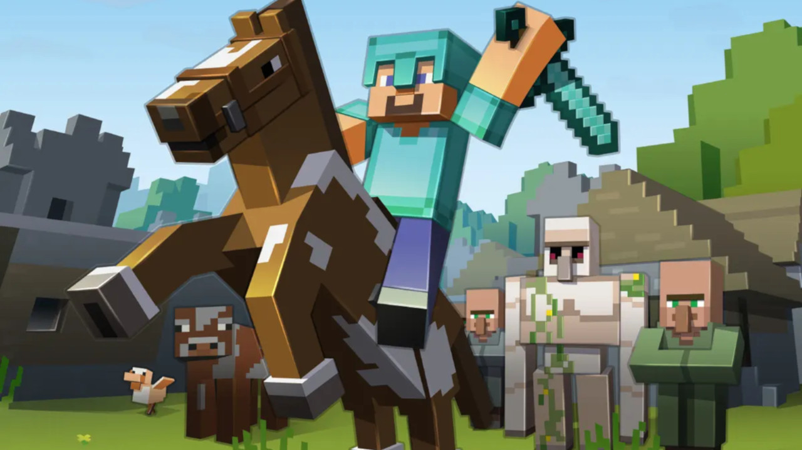
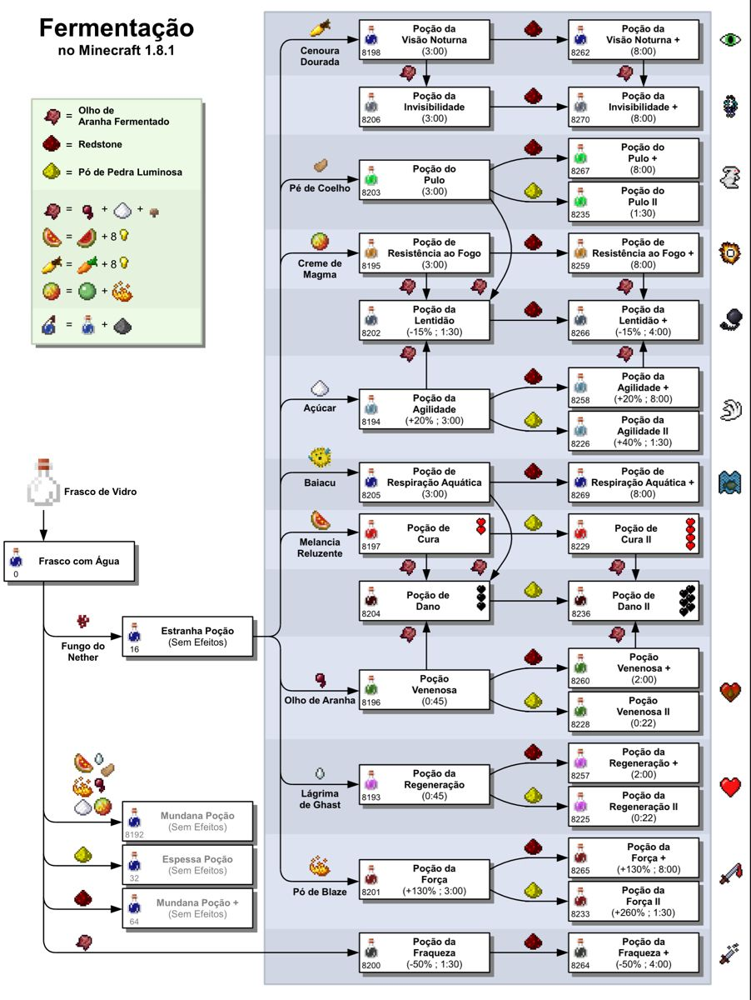

wiki minecraft
Sobre:
Minecraft é um jogo eletrônico lançado em 2009 que consiste em sobreviver em um mundo formado (majoritariamente) por blocos cúbicos. Steve, o personagem controlado pelo jogador, inicia o jogo em um ambiente repleto de árvores, montanhas, rios.
O mundo de Minecraft é virtualmente quase infinito e gerado proceduralmente à medida que os jogadores o exploram, usando um mapa ou uma bússola no momento da criação do mundo (ou manualmente conquistado pelo jogador). Existem limites para o movimento vertical, mas Minecraft permite que um enorme mundo seja gerado no plano horizontal. Devido a problemas técnicos quando locais extremamente distantes são alcançados, no entanto, existe uma barreira que impede os jogadores de atravessar para locais além de 30 milhões de blocos a partir do centro do mundo, conhecida como Far Lands.O jogo consegue fazer isso dividindo os dados do mundo em seções menores, que são criadas ou carregadas apenas quando os jogadores estão por perto. O mundo é dividido em biomas que variam de desertos a selvas e campos de neve,alguns terrenos incluem planícies, montanhas, florestas, cavernas e vários corpos de lava e água.O sistema de tempo no jogo segue um ciclo dia e noite, e um ciclo completo dura vinte minutos em tempo real.
SEU CRIADOR
Como já dito, o jogo foi lançado em 2009. O criador de Minecraft é o programador e designer sueco Markus "Notch" Persson, que levou apenas seis dias para criar tudo do zero. O projeto começou em 10 de maio, e no dia 16, ele já disponibilizou o projeto em fóruns.

poções :
as poções do minecraft podem ser extremamente dificeis de se compreender aqui um exemplo:
Quase todas as poções podem ser obtidas por fermentação, começando com o frasco de água como base.